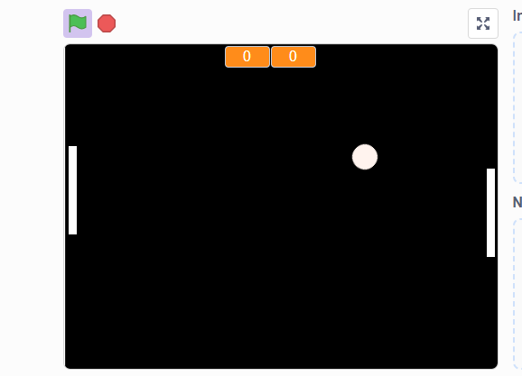

Outros Projetos 2: Primeiro Dashboard Power BI
Esse projeto é meu primeiro Dashboard desenvolvido com Power Bi com o auxílio da plataforma Alura. A proposta era fazer um dashboard para um Pet Shop fictício.

Esse projeto trata-se de um jogo desenvolvido com Scratch ensinado na plataforma Alura.

Esse projeto é meu primeiro Dashboard desenvolvido com Power Bi com o auxílio da plataforma Alura. A proposta era fazer um dashboard para um Pet Shop fictício.